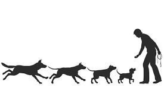
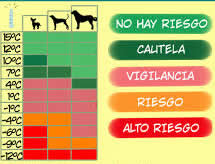
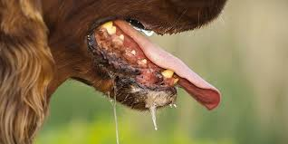

Origen y domesticación: Fueron los primeros animales domesticados por el ser humano, hace más de 15,000 años a partir del lobo gris.

Olfato: Su olfato es hasta 100,000 veces más agudo que el de los humanos; algunos pueden detectar más de 1 billón de olores diferentes.
Detección de enfermedades: Pueden percibir enfermedades como cáncer, diabetes y problemas cardíacos en sus tutores gracias a su sentido del olfato.
Audición: Escuchan frecuencias entre 40 y 60 kHz, cuatro veces más potentes que las que puede captar el oído humano.
Visión cromática: Ven en tonos de azul y amarillo; no distinguen el rojo ni el verde como lo hacemos nosotros.
Visión nocturna: El tapetum lucidum, una capa en su retina, les da visión nocturna y hace que sus ojos brillen en la oscuridad.
Ladridos: Los ladridos tienen significados distintos según el tono, duración y frecuencia (alerta, juguetón, ansioso).
Movimiento de cola: El movimiento de la cola expresa emociones: movimientos rápidos indican alegría, mientras que movimientos lentos pueden ser señal de precaución.
Comportamiento previo al descanso: Muchos giran en círculos antes de acostarse, un instinto ancestral para aplanar el terreno y detectar depredadores.
Músculos de las orejas: Tienen unas 18 músculos en cada oreja, lo que les permite moverlas de forma independiente para localizar sonidos.
Velocidad: Algunas razas pueden correr a velocidades impresionantes: el galgo puede alcanzar hasta 65 km/h.
Temperatura corporal: Su temperatura corporal normal oscila entre 38°C y 39°C, más alta que la de los humanos.
Comprensión lingüística: Pueden entender hasta 250 palabras y gestos, equivalentes a un niño de 2 años.
Regulación térmica: Los perros no sudan como los humanos; regulan su temperatura corporal mediante jadeo y sudoración en las almohadillas de las patas.

Órgano vomeronasal: Tienen un órgano vomeronasal (órgano de Jacobson) que les permite detectar feromonas y otros químicos.
Predicción de fenómenos naturales: Algunos perros pueden predecir terremotos y tormentas gracias a su sensibilidad a los cambios en la presión atmosférica.
Pelo: El pelo de los perros no crece continuamente como el humano; se renueva mediante muda estacional.
Lengua: La lengua de un perro puede llegar a medir hasta 15 cm de largo en razas grandes, y la usan para limpiarse, regular la temperatura y comunicarse.
Sueño: Muchos perros duermen con los ojos entreabiertos y pueden tener movimientos o sonidos durante el sueño, indicando que están soñando.
Raza más antigua: La raza más antigua del mundo es el perro dingo australiano, que habita en el continente desde hace más de 4,000 años.
Dientes: Tienen 42 dientes adultos, mientras que los humanos tenemos 32; los cachorros nacen sin dientes y desarrollan 28 dientes de leche.
Memoria: Tienen excelente memoria asociativa, recordando lugares, personas y comandos durante años.
Comunicación olfativa: Se saludan oliéndose las partes genitales, ya que allí se concentran feromonas con información sobre edad, estado de salud y ánimo.
Salivación: Algunas razas (como los basset hound) salivan más que otras debido a la forma de su boca y hocico.

Saltos: El perro que más ha saltado en un salto vertical es un border collie llamado Cinderella May, que alcanzó los 191 cm.
Nadar: Algunas razas tienen un instinto natural para nadar (como los labradores), mientras que otras necesitan enseñarles.
Huellas: Las almohadillas de sus patas tienen huellas únicas, al igual que las huellas dactilares humanas.
Longevidad: Las razas pequeñas suelen vivir más que las grandes; algunas pueden llegar a los 20 años de edad.
Capacidad de aprendizaje: Pueden aprender nuevos comportamientos en cuestión de minutos con refuerzo positivo adecuado.
Emociones: Son capaces de sentir alegría, tristeza, miedo, enojo y amor, y pueden contagiar sus emociones a sus tutores.